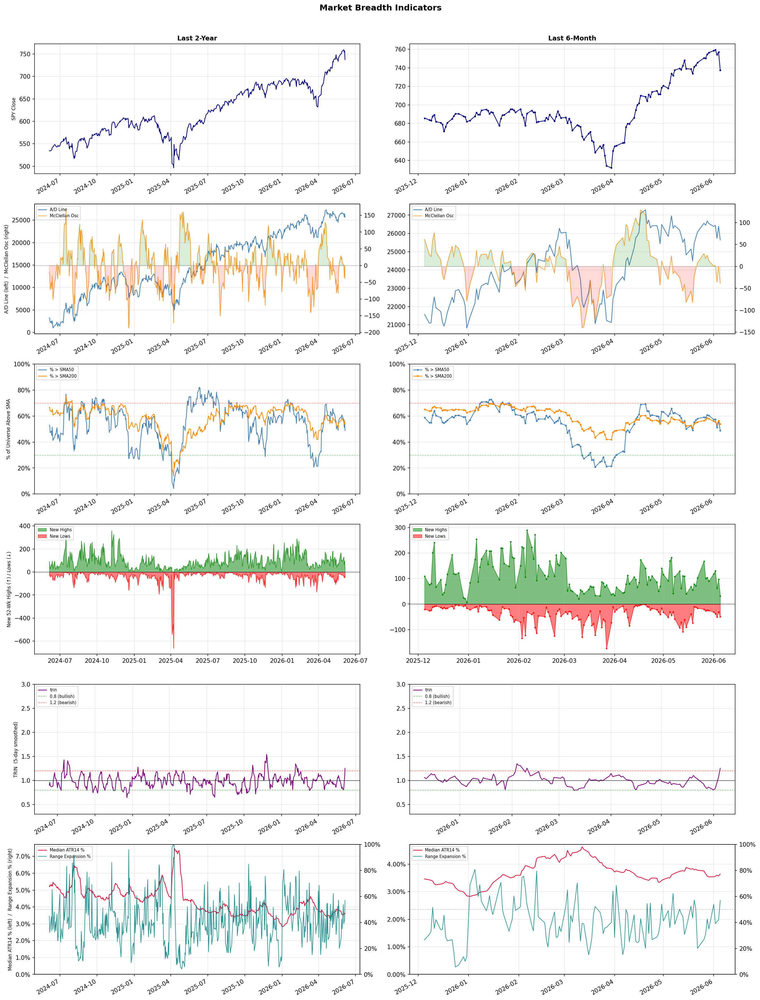

A daily research map of market breadth, industry rotation, and technical setups
| Item | Read |
|---|---|
| Regime downgraded | Selective Risk-On → Defensive |
| Regime | Defensive |
| Risk posture | Defensive |
| Indices | QQQ 705.06 (-4.8% today) |
| Universe | 1,702 stocks tracked · 32 new 52-week highs · 30 active swing setups |
| Breadth | only 48.8% of tracked stocks are above SMA50, new lows exceed new highs (49 vs 32), McClellan oscillator (breadth momentum) is negative at -38.8 |
| Leadership | Computer Hardware, Trucking, and Semiconductors |
| Weakest groups | Other Precious Metals & Mining, Gold, and Uranium |
Use this report to prioritize research and chart review; validate entries, stops, liquidity, earnings, and risk before acting.
| Item | Read |
|---|---|
| Primary read | Defensive regime with Defensive risk posture. |
| Research queue | DELL, SNDK, IONQ, HPQ, SMCI |
| Leadership focus | Computer Hardware, Trucking, and Semiconductors |
| Caution list | Other Precious Metals & Mining, Gold, and Uranium |
| Review prompt | Check extension risk, chart location, fundamentals, valuation, and earnings before using any research row. |
| Item | Read |
|---|---|
| Primary read | 4 active risk warnings; use screen output as watchlist input only. |
| Bullish screens | DRH, HST, PEB, ELV, HNGE |
| Bearish screens | WIX, LCID, LI, TAL, UWMC |
| Alerts / levels | Automated trigger, stop, ATR, liquidity, reward/risk, and event-risk levels are pending future enrichment. |
| Review prompt | Open the linked chart, define trigger and invalidation, then check liquidity and event risk independently. |
Risk Posture: Defensive — screen backdrop favors caution; require independent risk review before new exposure
Metric context: McClellan below -50 = elevated selling pressure; below -100 = washout territory. Range Expansion = share of stocks with daily range above their 20-day average. Signal Density = share of tracked names appearing in signal screens.
| Breadth Date | % > SMA50 | % > SMA200 | New Highs | New Lows | McClellan | Median Range | Avg Range | Median ATR14 | Range Expansion | Signal Density |
|---|---|---|---|---|---|---|---|---|---|---|
| 2026-06-05 | 48.8% | 53.8% | 32 | 49 | -38.8 | 3.3% | 4.6% | 3.6% | 56.9% | 8.1% |

Regime downgraded: Selective Risk-On → Defensive
Prior comparison date: June 4, 2026
| Metric | Prior | Current | Change |
|---|---|---|---|
| Regime | Selective Risk-On | Defensive | changed |
| Risk Posture | Selective | Defensive | changed |
| % > SMA50 | 56.3% | 48.8% | -7.4 pts |
| % > SMA200 | 56.4% | 53.8% | -2.7 pts |
| New Highs | 96 | 32 | -64 |
| New Lows | 31 | 49 | -18 |
Top-10 industries entering: REIT - Office. Top-10 industries leaving: Semiconductor Equipment & Materials. New multi-signal long setups: AMN, ELV, EXEL, FCF, HLT, HNGE, KRG, LLY. New multi-signal short setups: LCID, LI.
| Status | Tickers | Read |
|---|---|---|
| Added | AMN, DELL, ELV, EXEL, FCF, HLT, HNGE, KNX | New technical screen matches vs prior report. |
| Removed | ALGM, APLE, CELH, DFTX, DGX, EA, FAST, HUM | No longer present in today's technical screen matches. |
| Still Active | ABBV, CPT, DRH, HST, TJX, WERN | Appeared in both current and prior reports. |
| Promoted | none | Model Screen Score improved by at least 15 points. |
| Downgraded | WERN | Model Screen Score declined by at least 15 points. |
| Direction | Industry | ETF | Prior Rank | Current Rank | Days | Rank Change |
|---|---|---|---|---|---|---|
| Rose | Diagnostics & Research | N/A | 98 | 18 | 42 | +80 |
| Rose | Solar | TAN | 87 | 9 | 42 | +78 |
| Rose | Aerospace & Defense | ITA | 90 | 22 | 42 | +68 |
| Rose | Airlines | N/A | 89 | 25 | 42 | +64 |
| Rose | Residential Construction | ITB | 90 | 27 | 14 | +63 |
Bull: The Diagnostics & Research sector is experiencing rising relative strength due to a combination of heightened investor interest in healthcare stocks, as highlighted by Morningstar's identification of top picks, and the sector's robust growth potential, exemplified by Agilent Technologies' projected 43.86% upside. Additionally, the recent sector-wide rally, evidenced by Waters' 5.3% jump, indicates strong market sentiment, likely driven by increasing demand for innovative healthcare solutions, including advancements in AI, which are poised to transform diagnostics and research methodologies.
Bear: While the rising relative strength and positive headlines may suggest optimism in the Diagnostics & Research sector, it is crucial to consider the potential overvaluation of stocks driven by speculative investor sentiment rather than fundamental growth. The projected upside for companies like Agilent Technologies may not account for the increasing competition, regulatory pressures, and potential market saturation in the diagnostics space, which could dampen long-term profitability. Additionally, the recent sell-off of Adaptive Biotechnologies shares indicates that institutional investors may be cautious about the sector's sustainability, suggesting that the current rally could be more of a short-term phenomenon rather than a solid foundation for growth.
Verdict: The Diagnostics & Research sector's rising relative strength is fundamentally driven by increased investor interest in healthcare stocks and the potential for significant growth fueled by innovations in AI and diagnostics technologies. However, investors should remain cautious of potential overvaluation and the risks posed by heightened competition and regulatory challenges, which could undermine long-term profitability and sustainability in the sector. It is advisable to closely monitor these dynamics and consider a diversified approach to mitigate risks associated with speculative sentiment.
Sources: Google News
Bull: The solar industry is experiencing a significant rise in relative strength primarily due to a strong shift towards renewable energy sources, highlighted by the recent headlines indicating that wind and solar have overtaken gas globally. This transition is further supported by impressive performance metrics, such as the 120% gain over the past five months and the Invesco Solar ETF (TAN) reaching a new 52-week high, reflecting increased investor confidence and demand for clean energy solutions amid growing environmental awareness and regulatory support for sustainable practices. Additionally, the substantial year-to-date gains of 35% in environmentally friendly energy ETFs underscore the market's bullish sentiment towards solar as a key player in the energy transition.
Bear: While the solar industry has seen impressive gains recently, these may be driven more by speculative investor sentiment and short-term market trends rather than sustainable fundamentals. The solar sector remains vulnerable to supply chain disruptions, regulatory changes, and increasing competition from other renewable sources, which could undermine its growth trajectory. Additionally, the significant rise in stock prices may not be supported by corresponding earnings growth, raising concerns about potential overvaluation and the risk of a market correction.
Verdict: The solar industry's rise is fundamentally driven by a strong global shift towards renewable energy, bolstered by regulatory support and heightened investor interest, as evidenced by significant ETF gains and market momentum. However, investors should remain cautious of potential risks, including supply chain vulnerabilities and the possibility of overvaluation, which could lead to a market correction if earnings do not keep pace with rising stock prices. To navigate this landscape, consider diversifying investments within the renewable sector and closely monitoring regulatory developments and competitive dynamics.
Sources: Yahoo Finance, Google News
Bull: The Aerospace & Defense sector is experiencing rising relative strength primarily due to record-high NATO defense spending, as highlighted in recent headlines, indicating a robust commitment to military budgets across member nations. This trend is further supported by the growing demand for advanced technologies, such as AI software in defense applications, as seen with Ondas Holdings, which enhances the sector's profitability and innovation potential. Additionally, the overall geopolitical climate, underscored by heightened tensions and security concerns, is likely to sustain and potentially increase defense expenditures, positioning the sector favorably for continued growth.
Bear: While the Aerospace & Defense sector may currently benefit from rising NATO defense spending, this trend could be unsustainable in the long term as member nations face increasing domestic pressures and budget constraints. Additionally, the cooling off of European defense stocks suggests that the initial surge in military spending may be leveling off, which could lead to stagnation in growth for companies within the sector. Furthermore, geopolitical tensions can be unpredictable, and any resolution or de-escalation could result in a significant reduction in defense budgets, undermining the bullish outlook.
Verdict: The Aerospace & Defense sector is likely experiencing a rise in relative strength due to sustained NATO defense spending and increasing demand for advanced technologies, which enhance profitability and innovation. However, a key risk to this bullish outlook is the potential for domestic budget constraints and geopolitical de-escalation, which could lead to reduced defense expenditures and stagnation in growth. Investors should monitor geopolitical developments and domestic fiscal policies closely to assess the sustainability of this trend.
Sources: Yahoo Finance, Google News
Bull: The rising relative strength of the airline industry can be attributed to a robust recovery in travel demand as consumers increasingly prioritize leisure and business travel, despite some recent headwinds noted in the headlines. Positive sentiment is reflected in articles like Barron's, which highlights that United and other airlines are experiencing upward momentum, suggesting that market participants anticipate further gains as operational efficiencies improve and capacity constraints ease. Additionally, the overall bullish outlook from various financial news sources indicates that investors are recognizing the potential for airlines to rebound significantly as economic conditions stabilize and travel restrictions continue to lift.
Bear: While the rising relative strength of the airline industry may suggest a recovery, it is crucial to consider the underlying vulnerabilities that could derail this momentum. Factors such as rising fuel prices, labor shortages, and potential economic slowdowns could significantly impact profitability, while the recent headlines indicate that not all airlines are benefiting equally—evidenced by the declines in stocks like United Airlines. Furthermore, the optimism surrounding a rebound in travel demand may be overly reliant on transient consumer behavior, which could shift if economic conditions worsen or if new travel restrictions emerge.
Verdict: The airline industry's rising strength is primarily driven by a robust recovery in travel demand, bolstered by improving operational efficiencies and easing capacity constraints. However, key risks remain, particularly from rising fuel prices and potential economic slowdowns, which could undermine profitability and lead to uneven performance among airlines. Investors should closely monitor these factors to gauge the sustainability of the current bullish momentum.
Sources: Google News
Bull: The rising relative strength of the Residential Construction sector, as reflected in the ITB ETF, can be attributed to the recent decline in mortgage rates, which has made home financing more affordable and is likely to stimulate demand for new homes. Additionally, positive sentiment from major investors, such as Berkshire Hathaway's endorsement of the sector, coupled with analysts' bullish outlook on homebuilder stocks, suggests a rebound in construction activity, further bolstering investor confidence in the space.
Bear: While the recent decline in mortgage rates may provide a temporary boost to home financing affordability, the underlying demand for new homes remains constrained by persistent affordability issues, high inflation, and economic uncertainty, which could dampen long-term growth in the sector. Furthermore, the spike in mortgage rates to 6.51%—the highest since August—could quickly reverse any gains, leading to decreased buyer activity and potentially stalling the anticipated rebound in construction. Additionally, the bullish sentiment from major investors may not be enough to counteract these fundamental challenges, suggesting that the current optimism in the ITB ETF may be misplaced.
Verdict: The Residential Construction sector's rising strength, as indicated by the ITB ETF, is primarily driven by declining mortgage rates that enhance home financing affordability, potentially stimulating demand for new homes. However, a key risk lies in the recent spike in mortgage rates to 6.51%, which could undermine buyer activity and halt the sector's momentum if economic uncertainty and affordability issues persist. Investors should closely monitor mortgage rate trends and broader economic indicators to gauge the sustainability of this bullish outlook.
Sources: Yahoo Finance, Google News
| Direction | Industry | ETF | Prior Rank | Current Rank | Days | Rank Change |
|---|---|---|---|---|---|---|
| Fell | Apparel Manufacturing | N/A | 9 | 86 | 42 | -77 |
| Fell | Uranium | URA | 22 | 96 | 35 | -74 |
| Fell | Chemicals | N/A | 16 | 81 | 35 | -65 |
| Fell | Engineering & Construction | N/A | 13 | 77 | 35 | -64 |
| Fell | Other Industrial Metals & Mining | N/A | 8 | 70 | 28 | -62 |
Bear: While the bull analyst points to potential growth opportunities within select companies, the broader trend of falling relative strength and significant sector-wide selling, as evidenced by Columbia Sportswear's notable decline, raises serious concerns about the overall health of the apparel manufacturing industry. Additionally, shifting consumer preferences towards sustainability and digital shopping experiences may further challenge traditional apparel brands, making it difficult for them to recover amidst economic uncertainties. This suggests that the bullish sentiment may be overly optimistic, failing to account for the fundamental shifts reshaping the sector.
Bull: The Apparel Manufacturing sector is currently experiencing a decline in relative strength due to broader market volatility and sector-wide selling, as highlighted by Columbia Sportswear's 5.4% drop amid negative sentiment. This downturn may be exacerbated by shifting consumer preferences and economic uncertainties, prompting investors to reassess their positions in the industry. However, the emergence of bullish articles, such as those from Yahoo Finance and The Motley Fool, suggests that select companies within the sector are well-positioned for growth, indicating potential for a rebound as market conditions stabilize.
Verdict: The apparel manufacturing industry's decline is primarily driven by broader market volatility and changing consumer preferences, particularly a shift towards sustainability and digital shopping experiences, which traditional brands may struggle to adapt to. The key risk highlighted by the bear thesis is that despite potential growth in select companies, the overall sector faces significant challenges that could hinder recovery, suggesting investors should approach the industry with caution and consider diversifying into more resilient sectors.
Sources: Google News
Bear: While the bull analyst highlights the potential of nuclear energy as a long-term solution to rising electricity demands, the immediate market sentiment is heavily influenced by the rapid growth and visibility of alternative energy and AI sectors, which are attracting significant capital. Furthermore, the uranium sector faces structural challenges such as regulatory hurdles, geopolitical risks, and the potential for oversupply, which could undermine any bullish narrative and keep the relative strength trend in decline. The liquidity issues with smaller ETFs like NUKZ also raise concerns about the overall health and attractiveness of uranium investments, suggesting that the sector may struggle to regain momentum in the near term.
Bull: The relative weakness in the Uranium sector can be attributed to a broader market focus on alternative energy and technology themes, particularly driven by the surge in demand for electricity from data centers and AI technologies, as highlighted in the headlines. While nuclear power is recognized as a crucial solution to meet this rising demand, the current investor sentiment appears to be gravitating towards more immediate growth sectors like AI and renewable energy, overshadowing uranium investments despite their long-term potential. Additionally, the liquidity concerns surrounding smaller ETFs like NUKZ may further dampen investor confidence in the uranium space, contributing to its declining relative strength.
Verdict: The uranium industry's decline can be fundamentally attributed to a shift in investor focus towards high-growth sectors like AI and renewable energy, which currently dominate market sentiment and capital allocation. Key risks include structural challenges such as regulatory hurdles and potential oversupply, which could further dampen investor confidence and hinder a rebound in uranium investments. To navigate this environment, investors should closely monitor regulatory developments and market dynamics that could influence uranium's long-term viability amidst competing energy narratives.
Sources: Yahoo Finance, Google News
Bear: While the bull analyst highlights macroeconomic pressures and market volatility, it is crucial to recognize that the Chemicals sector is facing significant structural challenges, including regulatory pressures and increasing raw material costs, which could further exacerbate its declining relative strength. Additionally, the mixed performance in the agricultural chemicals space, as reported by The Economic Times, may indicate deeper issues within the sector that could deter long-term investment, overshadowing any short-term bets like Jim Ratcliffe's. Ultimately, without a robust recovery in demand and resolution of these sector-specific headwinds, the Chemicals industry may struggle to regain its footing.
Bull: The Chemicals sector is likely experiencing a decline in relative strength due to macroeconomic pressures and market volatility, as indicated by the broader market's fluctuations highlighted in the Morningstar article. Additionally, while there is a notable investment interest, such as Jim Ratcliffe's €200 million bet on chemical sector peers, the overall sentiment may be tempered by concerns in the agricultural chemicals space, as suggested by the mixed performance of pesticide stocks reported by The Economic Times. This combination of cautious market sentiment and sector-specific challenges is contributing to the Chemicals industry's relative weakness against other sectors.
Verdict: The Chemicals sector's decline is primarily driven by macroeconomic pressures and structural challenges, including regulatory hurdles and rising raw material costs, which are dampening investor sentiment and long-term growth prospects. The key risk highlighted by the bear thesis is that without a significant recovery in demand and resolution of these persistent issues, the sector may continue to underperform relative to others, making it crucial for investors to exercise caution and closely monitor market developments before making investment decisions.
Sources: Google News
Bear: While the bull analyst acknowledges the challenges faced by specific companies, the broader Engineering & Construction sector is grappling with systemic issues such as rising material costs, labor shortages, and supply chain disruptions that are not easily resolved. Furthermore, the anticipated AI infrastructure boom may not translate into immediate gains for all players in the sector, as the capital-intensive nature of these projects could lead to increased debt levels and financial strain, ultimately undermining investor confidence and leading to a prolonged period of underperformance.
Bull: The Engineering & Construction sector is experiencing a decline in relative strength primarily due to market concerns about specific companies facing significant challenges, as highlighted by IL&FS Engineering & Construction Co Ltd's recent lock at a lower circuit with a 4.97% loss, indicating a lack of buyer confidence. Additionally, while the sector is poised for growth driven by the AI infrastructure boom, as noted in the MarketWise headline, the overall sentiment may be dampened by broader economic uncertainties and the need for substantial capital investment, which can deter investor enthusiasm in the short term.
Verdict: The Engineering & Construction sector's decline is primarily driven by systemic challenges such as rising material costs, labor shortages, and supply chain disruptions, which are exacerbating existing market concerns about specific companies like IL&FS Engineering & Construction Co Ltd. The key risk from the bear case lies in the capital-intensive nature of anticipated AI infrastructure projects, which could lead to increased debt levels and financial strain, ultimately dampening investor confidence and prolonging underperformance. Investors should remain cautious and closely monitor these fundamental issues before making commitments in the sector.
Sources: Google News
Bear: While the bull analyst attributes the relative strength decline in the Other Industrial Metals & Mining sector to broader market dynamics and a shift in investor focus towards specific metals like copper, this overlooks the fundamental challenges facing the entire sector, including potential oversupply, rising production costs, and geopolitical risks that could disrupt mining operations. Additionally, the increasing regulatory scrutiny and environmental concerns surrounding mining activities may dampen future growth prospects, making it difficult for the sector to recover even if certain metals show promise.
Bull: The relative strength decline of the Other Industrial Metals & Mining sector is likely driven by broader market dynamics and investor sentiment favoring specific metals like copper, as highlighted in recent articles focusing on the best mining stocks and ETFs for 2026. This suggests a shift in investor interest towards more specialized segments within the metals market, potentially due to expectations of higher demand for copper in green technologies and infrastructure projects, overshadowing the broader industrial metals category. Furthermore, the emphasis on basic materials stocks in general indicates that while the sector may be underperforming relative to others, there are still pockets of opportunity that investors are keenly exploring.
Verdict: The decline in the Other Industrial Metals & Mining sector is primarily driven by a combination of shifting investor sentiment towards specific metals like copper, which are anticipated to benefit from green technology demand, and fundamental challenges such as oversupply, rising production costs, and geopolitical risks. Key risks include increasing regulatory scrutiny and environmental concerns that could further hinder the sector's recovery, suggesting investors should approach with caution and focus on companies with strong fundamentals and adaptability to changing market conditions.
Sources: Google News
| Industry | Rank | ETF | 7d | 14d | 28d | 42d | Chg 42d | Size | 20D | 60D | Composite | Active Setups |
|---|---|---|---|---|---|---|---|---|---|---|---|---|
| Computer Hardware | 1 | XLK | 2 | 1 | 2 | 6 | +5 | 14 | 16.4% | 57.1% | 0.986 | 1 |
| Trucking | 2 | IYT | 10 | 11 | 10 | 5 | +3 | 5 | 17.6% | 48.1% | 0.971 | 1 |
| Semiconductors | 3 | SOXX | 1 | 2 | 1 | 2 | -1 | 36 | 16.4% | 86.4% | 0.944 | 2 |
| REIT - Hotel & Motel | 4 | XLRE | 7 | 9 | 9 | 16 | +12 | 7 | 15.4% | 28.9% | 0.939 | 2 |
| Electronic Components | 5 | XLK | 4 | 8 | 4 | 3 | -2 | 9 | 12.7% | 47.4% | 0.917 | 1 |
| Electrical Equipment & Parts | 6 | XLI | 8 | 7 | 5 | 8 | +2 | 11 | 15.4% | 29.1% | 0.903 | 1 |
| Healthcare Plans | 7 | IHF | 13 | 5 | 6 | 13 | +6 | 11 | 14.4% | 48.7% | 0.899 | 2 |
| Communication Equipment | 8 | IYZ | 6 | 4 | 7 | 4 | -4 | 17 | 10.9% | 38.1% | 0.879 | 1 |
| Solar | 9 | TAN | 3 | 3 | 26 | 87 | +78 | 8 | 23.9% | 30.8% | 0.877 | 1 |
| REIT - Office | 10 | XLRE | 16 | 20 | 19 | 45 | +35 | 10 | 5.9% | 18.7% | 0.856 | 2 |
Rank columns (7d–42d) show the industry's rank that many trading days ago — lower is stronger. Chg 42d = rank change vs 42 trading days ago — positive means the industry moved up. 20D and 60D are the mean stock return within the industry over that period. Active Setups: count of today's swing-trade candidates from this industry appearing across all signal screens.
| Industry | Rank | ETF | 7d | 14d | 28d | 42d | Chg 42d | Size | 20D | 60D | Composite | Active Setups |
|---|---|---|---|---|---|---|---|---|---|---|---|---|
| Other Precious Metals & Mining | 98 | N/A | 63 | 83 | 85 | 59 | -39 | 5 | -17.5% | -26.4% | 0.053 | 1 |
| Gold | 97 | GDX | 61 | 92 | 90 | 55 | -42 | 31 | -15.8% | -25.2% | 0.071 | 1 |
| Uranium | 96 | URA | 96 | 95 | 39 | 67 | -29 | 6 | -20.8% | -18.0% | 0.077 | 1 |
| Utilities - Independent Power Producers | 95 | XLU | 71 | 78 | 73 | 61 | -34 | 5 | -10.0% | -8.7% | 0.089 | 1 |
| Packaged Foods | 94 | XLP | 97 | 97 | 96 | 97 | +3 | 17 | -6.5% | -14.5% | 0.111 | 1 |
| Financial Data & Stock Exchanges | 93 | N/A | 78 | 71 | 48 | 82 | -11 | 7 | -6.9% | -6.8% | 0.140 | 1 |
| Agricultural Inputs | 92 | N/A | 69 | 64 | 89 | 83 | -9 | 7 | -5.8% | -9.4% | 0.144 | 2 |
| Household & Personal Products | 91 | XLP | 94 | 89 | 80 | 93 | +2 | 12 | -7.6% | -11.4% | 0.150 | 2 |
| REIT - Mortgage | 90 | N/A | 89 | 88 | 76 | 60 | -30 | 15 | -6.1% | -4.6% | 0.171 | 2 |
| Restaurants | 89 | N/A | 77 | 87 | 88 | 46 | -43 | 17 | -5.1% | -8.9% | 0.198 | 2 |
Rank columns (7d–42d) show the industry's rank that many trading days ago — lower is stronger. Chg 42d = rank change vs 42 trading days ago — positive means the industry moved up. 20D and 60D are the mean stock return within the industry over that period. Active Setups: count of today's swing-trade candidates from this industry appearing across all signal screens.
These are research candidates from top-ranked stocks, capped at five names per industry to avoid over-concentration. Returns shown (60D, 120D, 250D) are historical — they reflect where prices have already moved, not forward expectations. Extension Risk flags names that may require extra patience or a better entry point. They are not buy signals.
Chart: TV = TradingView chart (opens in browser); PDF = local chart file (if downloaded).
| Ticker | Name | Industry | Industry Rank | Market Cap | 60D Hist | 120D Hist | 250D Hist | Extension Risk | Research Reason | Chart |
|---|---|---|---|---|---|---|---|---|---|---|
| DELL | Dell Technologies | Computer Hardware | 1 | 97.1B | 167.6% | 184.6% | 246.7% | Very extended | Top-ranked in industry; very extended | TV |
| SNDK | SanDisk | Computer Hardware | 1 | 77.8B | 137.9% | 545.4% | 3882.9% | Very extended | Top-ranked in industry; very extended | TV |
| IONQ | IonQ Inc | Computer Hardware | 1 | 13.1B | 65.7% | 8.0% | 45.5% | Extended | Top-ranked in industry; extended | TV |
| HPQ | HP Inc | Computer Hardware | 1 | 17.8B | 38.6% | 0.7% | 1.6% | Constructive | Top-ranked in industry | TV |
| SMCI | Super Micro Computer | Computer Hardware | 1 | 18.8B | 31.0% | 22.4% | 0.2% | Constructive | Top-ranked in industry | TV |
| RXO | RXO Inc | Trucking | 2 | 2.3B | 111.3% | 73.2% | 67.6% | Very extended | Top-ranked in industry; very extended | TV |
| WERN | Werner Enterprises | Trucking | 2 | 1.8B | 46.8% | 41.7% | 61.9% | Constructive | Top-ranked in industry | TV |
| KNX | Knight-Swift Transportation | Trucking | 2 | 9.2B | 41.0% | 49.7% | 76.1% | Constructive | Top-ranked in industry | TV |
| ODFL | Old Dominion Freight Line | Trucking | 2 | 40.4B | 28.5% | 52.6% | 51.3% | Constructive | Top-ranked in industry | TV |
| XPO | XPO | Trucking | 2 | 22.1B | 12.9% | 45.8% | 84.8% | Constructive | Top-ranked in industry | TV |
| VSH | Vishay Intertechnology | Semiconductors | 3 | 2.3B | 226.9% | 261.1% | 277.3% | Very extended | Top-ranked in industry; very extended | TV |
| MRVL | Marvell Technology | Semiconductors | 3 | 78.2B | 191.3% | 194.6% | 285.5% | Very extended | Top-ranked in industry; very extended | TV |
| ARM | Arm Holdings | Semiconductors | 3 | 121.5B | 185.5% | 151.9% | 157.6% | Very extended | Top-ranked in industry; very extended | TV |
| ALAB | Astera Labs | Semiconductors | 3 | 20.3B | 154.2% | 82.5% | 249.4% | Very extended | Top-ranked in industry; very extended | TV |
| NVTS | Navitas Semiconductor | Semiconductors | 3 | 1.9B | 131.4% | 173.2% | 305.8% | Very extended | Top-ranked in industry; very extended | TV |
| RLJ | RLJ Lodging Trust | REIT - Hotel & Motel | 4 | 1.2B | 36.1% | 39.3% | 42.7% | Constructive | Top-ranked in industry | TV |
| PEB | Pebblebrook Hotel Trust | REIT - Hotel & Motel | 4 | 1.5B | 33.4% | 50.1% | 75.8% | Constructive | Top-ranked in industry | TV |
| PK | Park Hotels & Resorts Inc | REIT - Hotel & Motel | 4 | 2.2B | 29.7% | 30.1% | 36.8% | Constructive | Top-ranked in industry | TV |
| APLE | Apple Hospitality REIT Inc | REIT - Hotel & Motel | 4 | 2.9B | 29.1% | 31.3% | 32.9% | Constructive | Top-ranked in industry | TV |
| HST | Host Hotels & Resorts | REIT - Hotel & Motel | 4 | 13.2B | 28.3% | 35.8% | 56.2% | Constructive | Top-ranked in industry | TV |
These are technical screen matches from existing signal files. They are not trade recommendations. Trigger, stop, ATR, liquidity, reward/risk, and event risk still require separate validation until those inputs are available.
Model Screen Score is weighted by signal count, industry rank, freshness, and setup type. It is not a probability of profit, expected return, or suitability rating. Industry cap: max 3 candidates per industry.
Signal glossary: Momentum Pullback = stock in an uptrend that has pulled back 10–30% and shows re-entry conditions. MA Compression = short- and long-term moving averages converging, often preceding a directional move. Three-Day Up/Down = three consecutive closes in the same direction. New 52Wk High/Low = price reached a new annual extreme.
Chart: TV = TradingView chart (opens in browser); PDF = local chart file (if downloaded).
| Ticker | Industry | Setups | Close | Industry Rank | Signal Count | Model Screen Score | Reason | Chart |
|---|---|---|---|---|---|---|---|---|
| DRH | REIT - Hotel & Motel | New 52Wk High; Three-Day Up | 11.61 | 4 | 2 | 93 | Multi-signal; top industry breakout | TV |
| HST | REIT - Hotel & Motel | New 52Wk High; Three-Day Up | 24.62 | 4 | 2 | 93 | Multi-signal; top industry breakout | TV |
| PEB | REIT - Hotel & Motel | New 52Wk High; Three-Day Up | 16.89 | 4 | 2 | 93 | Multi-signal; top industry breakout | TV |
| ELV | Healthcare Plans | New 52Wk High; Three-Day Up | 415.53 | 7 | 2 | 93 | Multi-signal; top industry breakout | TV |
| HNGE | Health Information Services | New 52Wk High; Three-Day Up | 63.62 | 21 | 2 | 77 | Multi-signal; new-high strength | TV |
| LLY | Drug Manufacturers - General | New 52Wk High; Three-Day Up | 1131.42 | 24 | 2 | 77 | Multi-signal; new-high strength | TV |
| CPT | REIT - Residential | MA Compression; Three-Day Up | 112.60 | 19 | 2 | 72 | Multi-signal; compression setup | TV |
| ABBV | Drug Manufacturers - General | MA Compression; Three-Day Up | 227.23 | 24 | 2 | 72 | Multi-signal; compression setup | TV |
| MET | Insurance - Life | New 52Wk High; Three-Day Up | 84.49 | 34 | 2 | 70 | Multi-signal; new-high strength | TV |
| UNM | Insurance - Life | New 52Wk High; Three-Day Up | 86.84 | 34 | 2 | 70 | Multi-signal; new-high strength | TV |
| KRG | REIT - Retail | New 52Wk High; Three-Day Up | 27.69 | 36 | 2 | 70 | Multi-signal; new-high strength | TV |
| FCF | Banks - Regional | New 52Wk High; Three-Day Up | 19.11 | 38 | 2 | 70 | Multi-signal; new-high strength | TV |
| NWBI | Banks - Regional | New 52Wk High; Three-Day Up | 14.19 | 38 | 2 | 70 | Multi-signal; new-high strength | TV |
| TFSL | Banks - Regional | New 52Wk High; Three-Day Up | 16.42 | 38 | 2 | 70 | Multi-signal; new-high strength | TV |
| AMN | Medical Care Facilities | New 52Wk High; Three-Day Up | 31.69 | 42 | 2 | 65 | Multi-signal; new-high strength | TV |
| EXEL | Biotechnology | New 52Wk High; Three-Day Up | 52.70 | 53 | 2 | 65 | Multi-signal; new-high strength | TV |
| PFG | Asset Management | New 52Wk High; Three-Day Up | 105.22 | 60 | 2 | 65 | Multi-signal; new-high strength | TV |
| TJX | Apparel Retail | MA Compression; Three-Day Up | 160.71 | 43 | 2 | 60 | Multi-signal; compression setup | TV |
| HLT | Lodging | New 52Wk High; Three-Day Up | 343.10 | N/A | 2 | 45 | Multi-signal; new-high strength | TV |
| MAR | Lodging | New 52Wk High; Three-Day Up | 392.51 | N/A | 2 | 45 | Multi-signal; new-high strength | TV |
| PSO | Publishing | New 52Wk High; Three-Day Up | 15.56 | N/A | 2 | 45 | Multi-signal; new-high strength | TV |
| VOYA | Financial Conglomerates | New 52Wk High; Three-Day Up | 86.69 | N/A | 2 | 45 | Multi-signal; new-high strength | TV |
| DELL | Computer Hardware | Momentum Pullback | 394.39 | 1 | 1 | 65 | Single-signal; top industry pullback | TV |
| KNX | Trucking | New 52Wk High | 78.57 | 2 | 1 | 65 | Single-signal; top industry breakout | TV |
| WERN | Trucking | New 52Wk High | 43.46 | 2 | 1 | 65 | Single-signal; top industry breakout | TV |
Bearish setups — stocks making new lows or showing persistent downside patterns. Validate carefully before acting.
| Ticker | Industry | Setups | Close | Industry Rank | Signal Count | Model Screen Score | Reason | Chart |
|---|---|---|---|---|---|---|---|---|
| WIX | Software - Infrastructure | New 52Wk Low; Three-Day Down | 52.39 | 17 | 2 | 47 | Multi-signal; new-low weakness | TV |
| LCID | Auto Manufacturers | New 52Wk Low; Three-Day Down | 5.11 | 64 | 2 | 25 | Multi-signal; new-low weakness | TV |
| LI | Auto Manufacturers | New 52Wk Low; Three-Day Down | 14.20 | 64 | 2 | 25 | Multi-signal; new-low weakness | TV |
| TAL | Education & Training Services | New 52Wk Low; Three-Day Down | 9.56 | N/A | 2 | 15 | Multi-signal; new-low weakness | TV |
| UWMC | Mortgage Finance | New 52Wk Low; Three-Day Down | 2.59 | N/A | 2 | 15 | Multi-signal; new-low weakness | TV |
How To Use This Report
| Use | Purpose |
|---|---|
| Market map | Start with breadth, regime, risk warnings, and what changed since the prior report. |
| Industry scan | Use leading, deteriorating, rising, and declining industries to focus research. |
| Research queue | Treat long-term candidates as names for deeper fundamental, valuation, and chart review. |
| Technical review | Treat bullish and bearish screen matches as watchlist inputs that require independent trigger, stop, liquidity, and event-risk checks. |
| Source follow-up | Use chart links and source files to verify raw inputs before relying on any row. |
What This Report Is Not
| Not | Meaning |
|---|---|
| Investment advice | The report does not evaluate personal objectives, risk tolerance, tax situation, account type, or suitability. |
| Buy/sell recommendation | Named tickers are research candidates or screen matches, not recommendations to transact. |
| Price target | The report does not provide fair value estimates, targets, or expected returns. |
| Trade plan | Trigger, stop, sizing, reward/risk, liquidity, and event-risk review remain separate user work. |
| Performance claim | Model Screen Score is not validated historical performance or a forecast of future results. |
| Item | Note |
|---|---|
| Version | Daily Report Methodology v1 |
| Model Screen Score | Screen-fit rank based on signal count, industry rank, freshness, and setup type. |
| Not predictive proof | The score is not expected return, probability of profit, historical validation, or suitability analysis. |
| Industry ranks | Composite industry ranks use existing daily ranking outputs and historical rank columns when available. |
| Research candidates | Long-term rows are research candidates from ranked stocks and leading industries, with historical returns labeled as historical only. |
| Technical matches | Bullish and bearish rows are screen matches requiring independent chart, trigger, stop, liquidity, and event-risk review. |
| Source | Status | Rows | Path |
|---|---|---|---|
| Market breadth | present | 1256 | breadth_20260605.csv |
| Industry composite rankings | present | 98 | all_industry_composite_20260605.csv |
| Top ranked stocks | present | 128 | top_ranked_composite_20260605.csv |
| All ranked stocks | present | 1702 | all_stocks_composite_sorted_20260605.csv |
| Top momentum pullbacks | present | 1800 | top_momentum_pullbacks_20260605.csv |
| MA compression | present | 1800 | ma_compression_stocks_20260605.csv |
| Three-day up/down | present | 264 | three_day_up_down_stocks_20260605.csv |
| New 52-week members | present | 81 | breadth_new_52wk_members_20260605.csv |
This report is generated from automated technical screens and is for informational and research purposes only. It is not investment advice, a solicitation, or a recommendation to buy or sell any security. Past performance is not indicative of future results. You are solely responsible for your own investment decisions. Consult a licensed financial advisor before acting on any information herein.